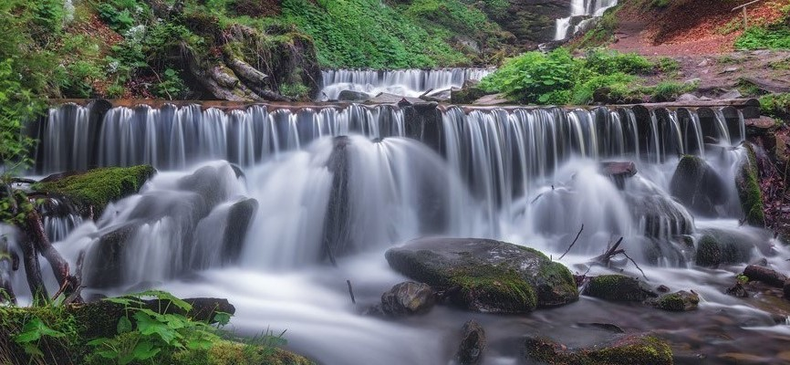
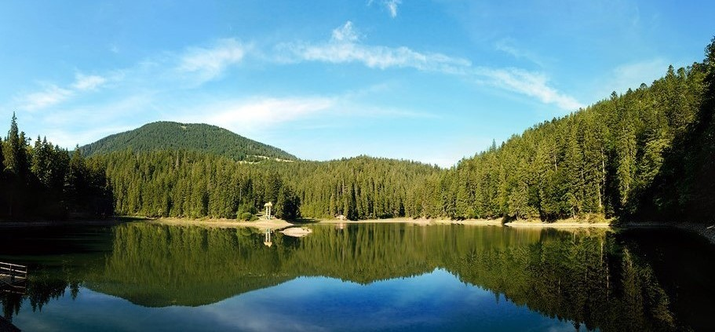

Українські Карпати – це ціла скринька незвіданих можливостей
та прекрасних локацій, які по-новому змушують нас дивитись на Україну.
Природні багатства гір, шумні водоспади, старовинні палаци
та замки на скелях – все це потрібно побачити на власні очі
хоча б раз у житті.Перелік найбільш цікавих місць у Карпатах,
які варто відвідати уже цього літа.
Водоспад Шипіт

На північних схилах Полонини Боржави, там, де височіє гора Гемба,серед крутих скель та лісівпричаївся водоспад Шипіт. Іноді тільки несамовитий рев водиможе підказати, що поблизу є потік з мальовничим водограєм.
Озеро синевир

Озеро Синевир, без перебільшення – легенда Карпат. Це найбільше і найзагадковіше озеро України. Шукати цю перлину варто серед скель і лісів гірського масиву Внутрішні Ґорґани, на землях національного природного парку з тією ж назвою.